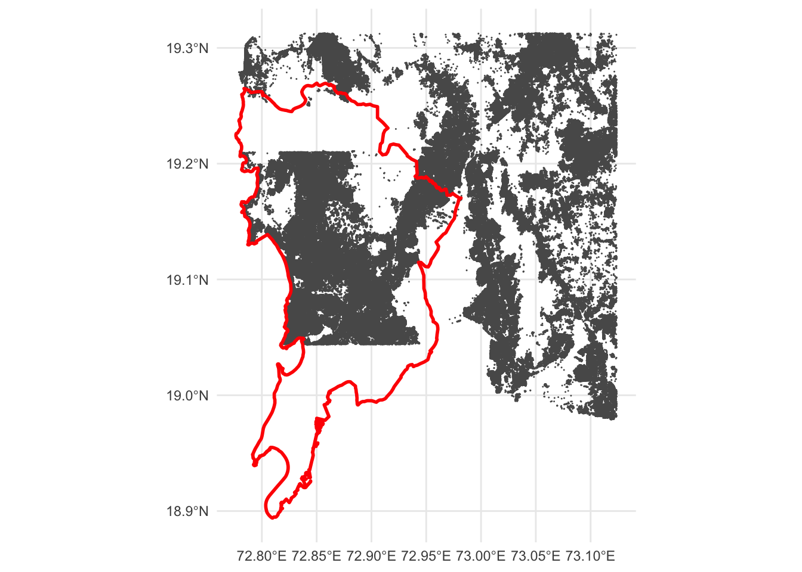

python3 -m pip install pyquadkey2
python3Building footprints from Global ML
data science
urban
india
mumbai
buildings
I’ve recently learned of the GlobalML dataset from Microsoft [1] which has extracted building footprints from satellite imagery. However, accessing the data is not trivial as only a handful of countries have specific data releases. The rest of the world, including India, are available as compressed files and can be downloaded using the quadkey for the required map tile.
The challenge I faced was figuring out which quadkey tile contained the latitude and longitudes I was interested in. Luckily, I found a very useful snippet [2] that makes use of the pyquadkey2 python package.
from pyquadkey2 import quadkey
def geo_to_qk(latitude, longitude, zoom_level):
"""Convert latitude and longitude to quadkey at specified
integer zoom level, returning quadkey as a string
"""
qk = str(quadkey.from_geo((latitude, longitude), zoom_level))
return qk
# To get a 9 digit quadkey, the zoom level is 9
geo_to_qk(19.07403, 72.99571, 9)The GlobalML data tiles are based on zoom level 9 so once I had the requisite quadkey (123300311), I just had to look up the file containing it in the data links csv, to get the following link: https://minedbuildings.blob.core.windows.net/global-buildings/2022-11-15/global-buildings.geojsonl/RegionName%3DIndia/quadkey%3D123300311/part-00055-2cb4a5ad-6652-48b0-a336-f09518f4c9e5.c000.csv.gz
For some unknown reason, the geojson file is saved as csv. So, once the csv.gz is downloaded and extracted, the file needs to be renamed from .csv to .geojson before being read into R with sf::st_read(). A quick visualisation shows that the tile gets footprints for Mumbai suburban district and the wider metropolitan region to the east. A different tile will be required for the Mumbai city district.

References
[1]
Microsoft/GlobalMLBuildingFootprints. Microsoft, 2023. Accessed: Feb. 06, 2023. [Online]. Available: https://github.com/microsoft/GlobalMLBuildingFootprints
[2]
“How to Convert Latitude and Longitude to Quadkey for Easy Joins – Iggy Blog.” https://www.askiggy.com/blog/how-to-convert-latitude-and-longitude-to-quadkey-for-easy-joins (accessed Feb. 06, 2023).